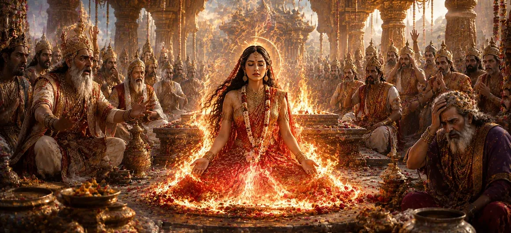

This chapter recounts one of the most profound and emotional events in the Shiva Purana. After witnessing Dakṣa’s continued disrespect toward Lord Shiva and realizing that her father had insulted the Supreme Lord before the entire assembly, Sati resolved that she could no longer remain connected to a body born from Dakṣa. Filled with divine determination and spiritual purity, she chose to abandon her mortal form through the power of yoga, leaving the assembly astonished and shaken.
Sati could endure many hardships, but she could not tolerate the insult directed toward Lord Shiva. Seeing her father persist in arrogance and disrespect despite repeated warnings filled her heart with profound sorrow. The assembly became a place of grief rather than celebration.
Addressing the assembly, Sati declared that she could no longer identify with a body born from one who harbored hatred toward Lord Shiva. She explained that spiritual truth was greater than worldly relationships and that devotion to the Divine surpassed all material bonds.
Having made her decision, Sati entered a state of deep meditation. Concentrating her mind upon Lord Shiva, she withdrew her life energies through yogic discipline. Her spiritual power illuminated the assembly and revealed her divine nature to all who witnessed the event.
As Sati abandoned her mortal body, the gods, sages, and celestial beings were overwhelmed with grief and astonishment. What had begun as a grand sacrifice had now become a scene of tragedy. Many realized too late the consequences of Dakṣa’s arrogance and disrespect.
Sati demonstrates that devotion to the Divine transcends all worldly attachments.
Dakṣa’s arrogance leads to sorrow and destruction rather than honor and success.
Sati’s unwavering determination reveals the power of spiritual conviction.
Sati’s departure marked a decisive turning point in the divine narrative. Her sacrifice would soon trigger events that would shake the heavens, transform the destiny of Dakṣa, and reveal the immense power of Lord Shiva’s love and grief.
The events of this chapter remind devotees that disrespect toward the Divine carries grave consequences. At the same time, Sati’s example teaches unwavering faith, spiritual courage, and the importance of remaining devoted to truth regardless of personal cost.
Sati’s abandonment of her mortal body is not merely an act of sorrow but a profound declaration of spiritual truth. Her devotion to Lord Shiva transcended all earthly identities and attachments. This chapter teaches that true spiritual commitment requires courage, purity, and unwavering faith in the Divine.
The moment Sati abandoned her mortal body, sorrow spread throughout the sacrificial assembly. The gods, sages, and celestial beings were overwhelmed by grief as they witnessed the tragic consequence of Dakṣa’s arrogance. Many lamented that a sacred gathering had become the scene of a devastating loss caused by pride and disrespect.
Although Lord Shiva was not present at the sacrifice, the cosmic consequences of Sati’s departure had already begun to unfold. The universe itself seemed to tremble as the balance of creation was disturbed. The events at Dakṣa’s sacrifice would soon awaken Shiva’s immense sorrow and righteous wrath, leading to one of the most dramatic episodes in the Shiva Purana.
"Where devotion is absolute, even the mortal body becomes secondary to eternal truth."
Continue exploring the sacred events of Sati Khanda as the aftermath of Sati’s sacrifice unfolds and a divine proclamation reveals the deeper significance of these world-changing events.